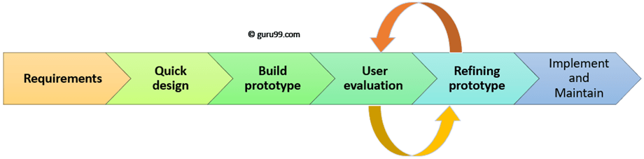

Waterfall Model is a sequential model that divides software development into pre-defined phases.
Each phase must be completed before the next phase can begin with no overlap between the phases.
When requirements are not changing frequently. Application is not complicated and big. Project is short. Requirement is clear.
Environment is stable.
It focuses on an initial, simplified implementation,
which then progressively gains more complexity and a broader feature set until the final system is complete.
Unlike the more traditional waterfall model, which focuses on a stringent step-by-step process of development stages,
the iterative model is best thought of as a cyclical process.
Prototype model should be used when the desired system needs to have a lot of interaction with the end users.
Typically, online systems, web interfaces have a very high amount of interaction with end users, are best suited for Prototype model.

The spiral model is a risk-driven software development process model. Based on the unique risk patterns of a given project,
the spiral model guides a team to adopt elements of one or more process models, such as incremental, waterfall, or evolutionary prototyping.
This saves a lot of time. Hence higher chance of success over the waterfall model. Proactive defect tracking –
that is defects are found at early stage. Avoids the downward flow of the defects.
With Agile software development, teams can quickly adapt to requirements changes without negatively impacting release dates. Not only that,
Agile helps reduce technical debt, improve customer satisfaction and deliver a higher quality product.